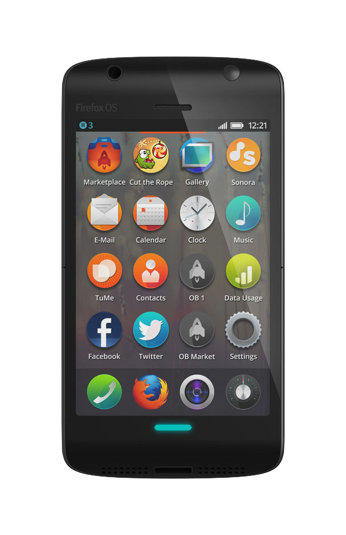
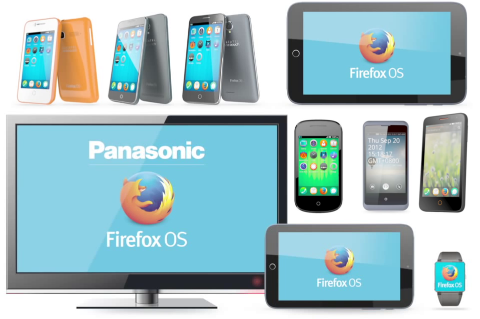
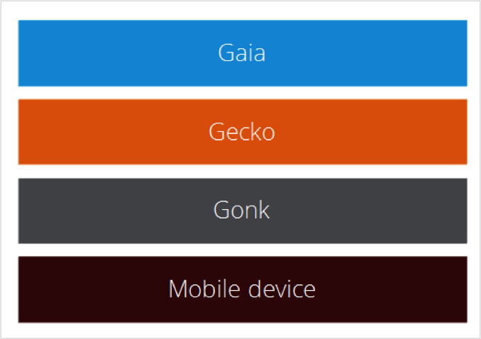
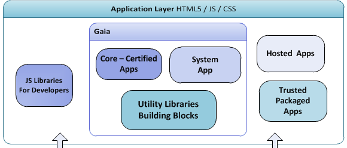

Firefox OS - Backup/Restore
PSU CS Capstone 2015
Dietrich Ayala (@dietrich)
Ralph Daub (@ralphdaub)

Firefox OS is a new open source mobile operating system.
Fully based on web technologies.
Provides an alternative, open platform.
Firefox OS has been...
Released in 14 24 32 countries
On with 3 12 17 devices
By 7 14 15 mobile operators
Beyond smartphones


Firefox OS == Gonk + Gecko + Gaia
Gaia

Is a set of Web Applications covering the core functionality: dialer, messaging, contacts, camera, gallery, homescreen, keyboard, system...
Problem!
- Many versions of Firefox OS on different devices in different countries.
- Most operators, carriers and OEMs do not update the OS.
- Leaving users with bugs, dataloss and no migration support.
- And vulnerable if their phone gets lost, broken or stolen.
The Project
- A Web app...
- that performs backup and restore...
- of user data in Firefox OS.
Requirements
- Audit all types of user data, classify by permissions type.
- Implement backup and restore for as many as possible.
- Store and read data from SD card.
- Prioritize the least privileged data types.
- Compatibility from Firefox OS 1.0 - 1.4.
Deliverables
- Web application
- User documentation
- All in a Github repo
- App submitted to Marketplace
- Blog post about your project
Challenges
- Auditing data types across version, permissions, and ability.
- Implementing compatibility across versions.
- Testing across versions.